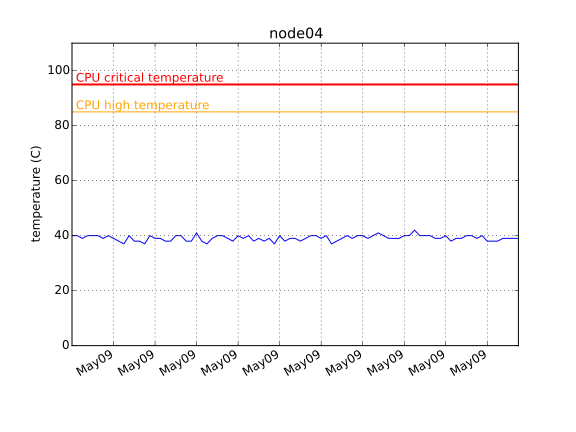
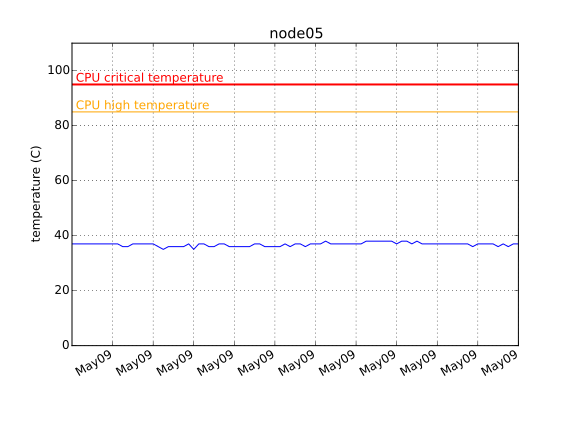
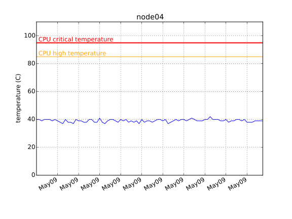
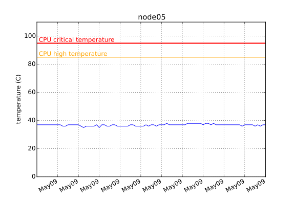
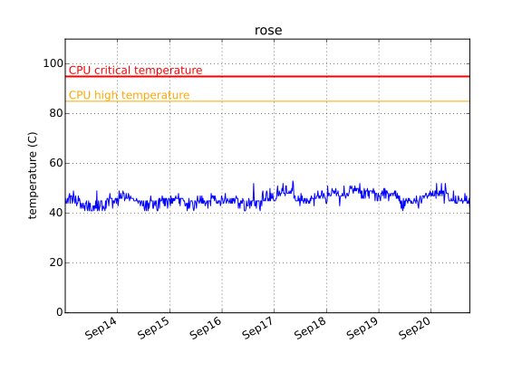
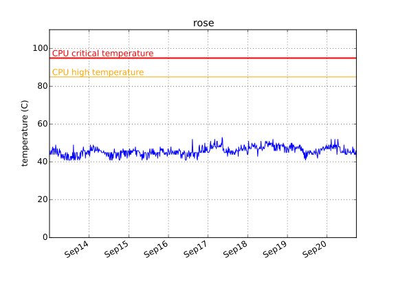

2015-10-26 10:00
| host name | disk | time checked | overall health | power_on hours | pre-fail symptons |
|---|---|---|---|---|---|
| headnode | /dev/sda | Mon Oct 26 03:00:01 2015 PDT | PASSED | 15413 | NONE (Raw_Read_Error_Rate = 0. Reallocated_Sector_Ct = 0. ) |
| headnode | /dev/sdb | Mon Oct 26 03:00:01 2015 PDT | PASSED | 8324 | NONE (Raw_Read_Error_Rate = 0. Reallocated_Sector_Ct = 0. ) |
| headnode | /dev/sdc | Mon Oct 26 03:00:01 2015 PDT | PASSED | 7180 | NONE (Raw_Read_Error_Rate = 0. Reallocated_Sector_Ct = 0. ) |
| headnode | /dev/sdd | Mon Oct 26 03:00:02 2015 PDT | PASSED | 7228 | NONE (Raw_Read_Error_Rate = 0. Reallocated_Sector_Ct = 0. ) |
| headnode | /dev/sde | Mon Oct 26 03:00:02 2015 PDT | PASSED | 9618 | NONE (Raw_Read_Error_Rate = 0. Reallocated_Sector_Ct = 0. ) |
| node01 | /dev/sda | Mon May 11 03:00:01 2015 PDT | PASSED | 12974 | NONE (Raw_Read_Error_Rate = 0. Reallocated_Sector_Ct = 0. ) |
| node02 | /dev/sda | Mon Oct 26 03:00:01 2015 CDT | PASSED | 16742 | NONE (Raw_Read_Error_Rate = 0. Reallocated_Sector_Ct = 0. ) |
| node03 | /dev/sda | Mon Oct 26 03:00:01 2015 CDT | PASSED | 16739 | NONE (Raw_Read_Error_Rate = 0. Reallocated_Sector_Ct = 0. ) |
| node04 | /dev/sda | Mon Oct 26 03:00:01 2015 PDT | PASSED | 4150 | NONE (Raw_Read_Error_Rate = 0. Reallocated_Sector_Ct = 0. ) |
| node05 | /dev/sda | Mon Oct 26 03:00:01 2015 PDT | PASSED | 4962 | NONE (Raw_Read_Error_Rate = 0. Reallocated_Sector_Ct = 0. ) |
| node06 | /dev/sda | Mon Oct 26 03:00:01 2015 PDT | PASSED | 5338 | NONE (Raw_Read_Error_Rate = 0. Reallocated_Sector_Ct = 0. ) |
| host name | disk | time checked | overall health |
|---|---|---|---|
| rose | raid | 2015-10-26 03:00:02 | optimal |


 



 

2014-07-24: node05 goes online
2014-07-20: Data is missing between July 18 and 20 due to power outage, causing the weirdly looking straight line in this time interval.